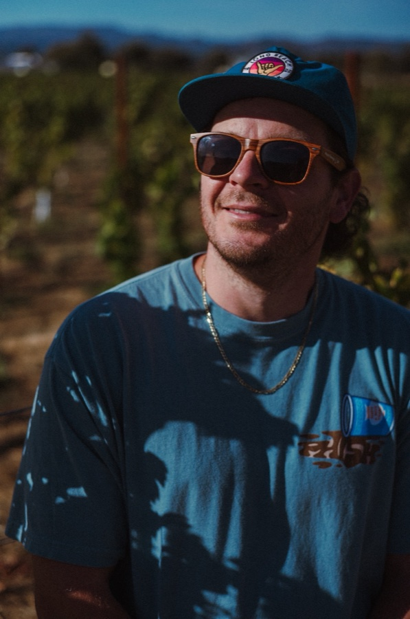

About
In a life shaped by a love of the visual arts and the early stages of the Internet, a Most Likely To Be Online superlative win in high school wasn't merely a cheeky acknowledgment; it was a professional prophecy. Over 15 years in marketing, I've worked on everything from The Huffington Post newsroom at the height of the viral-content era to blue chips like Budweiser and creator brands like Bob Does Sports, always anticipating and driving what gets consumers to click — and convert.
Currently Director of Creative Strategy at Doing Things, leading creative strategy and sales enablement across a portfolio of ~40 creator-led digital media brands. Previously: rebuilt Budweiser's organic social strategy, ran social for Scholastic Parents, and helped shape HuffPost Tech's homepage and social presence.

Brands & newsrooms I've worked with
The resume-style rundown, plus selected campaigns, copy samples, and results.